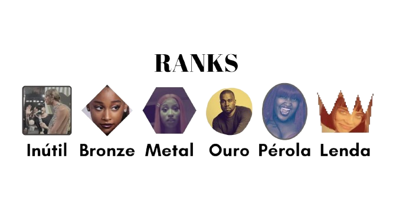

Ajudando professores a se organizar em seu dia-a-dia, permitindo que eles criem tarefas e editem.
“Não gostei”
"Muito bom para competir entre eu mesmo"
"Site horrendo e nada profissional"
"Só os burro usam esse sitekkkkkk"
- Reviews honestas dos nossos amados usuários (Parem com o hate)
